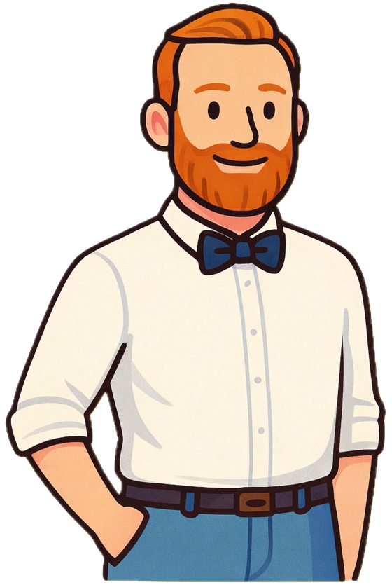
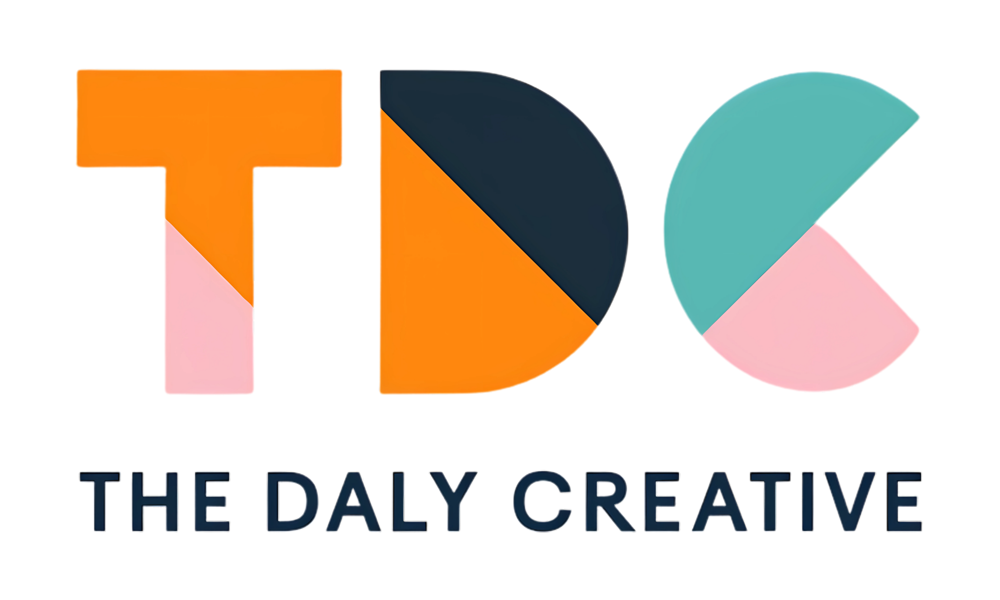

One creative studio. Big ideas. Smart systems.
Let's Work Together
Founder & Creative Strategist
Tim is a multi-disciplinary creative who lives at the intersection of design, technology, and strategy. With a background in brand development, web design, and AI automation, he founded The Daly Creative to help businesses cut through the noise and build systems that actually work.
What sets Tim apart? He doesn't just build websites or design logos — he creates intelligent systems that grow with your business. From custom AI agents to full-stack brand identities, Tim believes in empowering clients with tools and knowledge, not just deliverables.
As a neurodivergent creative, Tim understands the importance of clear communication, structured workflows, and accessible design. His approach is collaborative, transparent, and focused on long-term success rather than quick wins.
When he's not building brands or training AI models, you'll find Tim exploring Perth's coffee scene, tinkering with new tech, or advocating for more human-centered digital experiences.
The principles behind every project we take on.
We don't just make things look good — we make sure they work. Every design decision is backed by strategy and purpose.
We use AI and automation to amplify your effort, not replace the human touch. Technology should serve you.
Accessibility, clarity, and empathy are baked into everything we create. Great design should feel effortless.

To bridge the gap between human creativity and technical intelligence, empowering businesses with tools that scale with their ambition.
A track record of creative solutions and strategic thinking.
The Daly Creative
Helping Perth businesses grow smarter through AI strategy and design.
Dept. of Transport, WA
Supported P&C tech systems. Optimized online training workflows.
Supreme Court of WA
Led modernization of intranet and booking systems.
District Court of WA
Managed civil subpoena processing and digital systems.
Jetstar Airways
Built the resilience and people skills that define my work today.
Equinim College | 2024 — 2025
Focus: Back End Web Development & Cyber Security
CompletedTorrens University | Marketing
Bridging the gap between strategy and execution.
In Progress